AcaciasAcianosAlhelísAmapolasAmarilisAzaleasAzucenasBegoniasBelladonasCameliasCampanillasClavelesClaveles chinosClematisCorazón de MaríaCrisantemosDaliasFlor de primaveraFlores para adelgazarFlores para cocinarFlores para enamorarFrancesillasFresiasGeraniosGirasolesGladiolosHortensiasIrisJacintosJazmínLaurelesLavandasLilasLiriosLisMadreselvasMagnoliasMargaritasMimosasNarcisosNenúfaresNomeolvidesOrquídeasPensamientosPeoníasPetuniasPrímulasRosasTulipanesVioletas
CactusCactus más rarosCómo usar
fertilizantesConvertirse en
floristaFlores amarillasFlores azulesFlores blancasFlores de bodaFlores
moradasFlores naranjasFlores para
perfumeríaFlores rojasFlores verdesFlores y
cosméticaFunerales y condolenciasHerramientas para
cuidarHuertos
verticalesPlantas de marihuanaPlantas
resistentes al solProductos cosméticosRemedios reafirmantes
Respiración y
fotosíntesisPlantas de salón
Fotos e imágenes
En Flores Pedia puedes encontrar 499 fotos, imágenes o dibujos.
En esta sección las listamos todas, distribuidas en distintas páginas. Ésta es la página 2. Puedes
ampliar la información de la foto y ver a qué artículo corresponde. Para ello, simplemente pincha
sobre ella.
Nombre de flores:
lantanas Lista de flores de loto
Lista de flores de loto Tipos de flores:
margaritas
Tipos de flores:
margaritas Flores bonitas:
orquídeas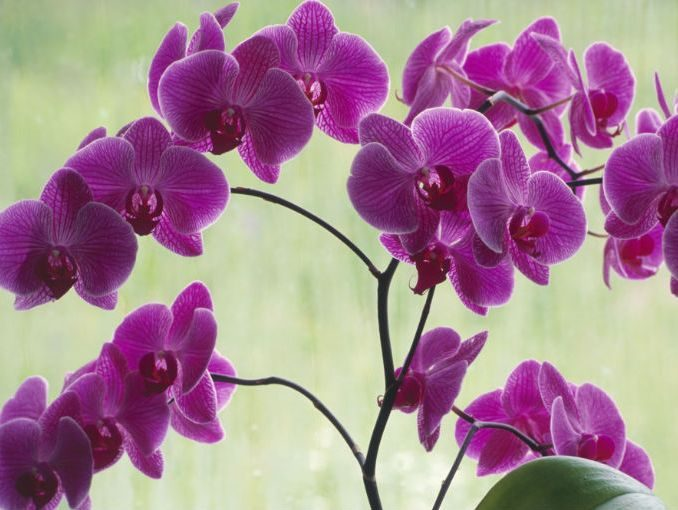Flores hermosas del
cerezo
Flores bonitas:
orquídeas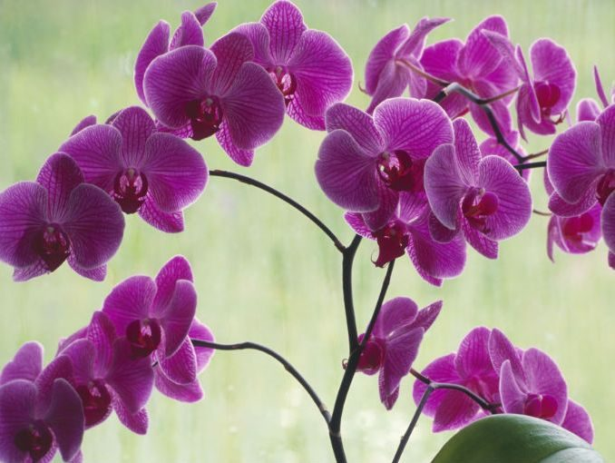Flores hermosas del
cerezo Nombre de flores
bonitas: cannas índicas
Nombre de flores
bonitas: cannas índicas Lista de flores bonitas:
claveles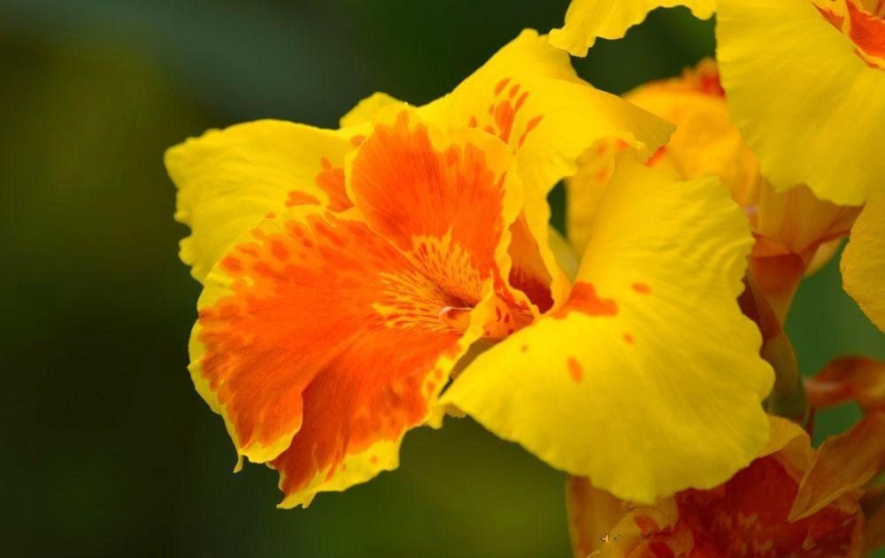Tipos de flores
bonitas:
Lista de flores bonitas:
claveles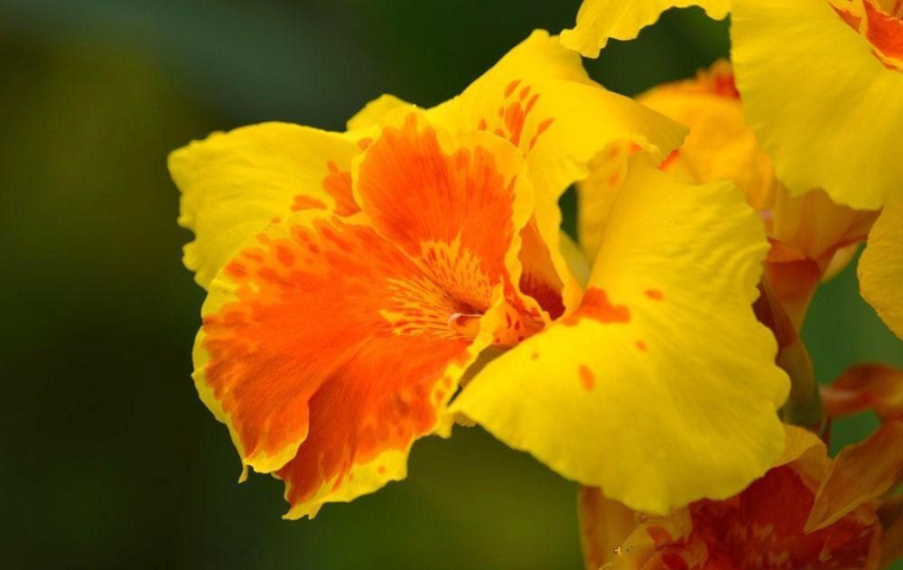Tipos de flores
bonitas: Flores bonitas: lirios
Flores bonitas: lirios Flores hermosas:
dalias
Flores hermosas:
dalias Nombre de flores
bonitas: tulipanes
Nombre de flores
bonitas: tulipanes Lista de flores bonitas:
hortensias
Lista de flores bonitas:
hortensias Tipos de flores bonitas:
rosas
Tipos de flores bonitas:
rosas Flores bonitas:
girasoles
Flores bonitas:
girasoles Flores
bonitas
Flores
bonitas Flores verdes: Flores
verdes: 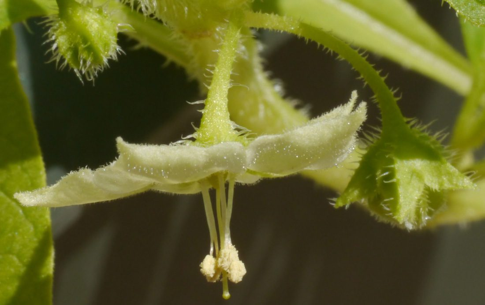Flores verdes:
Lagrimitas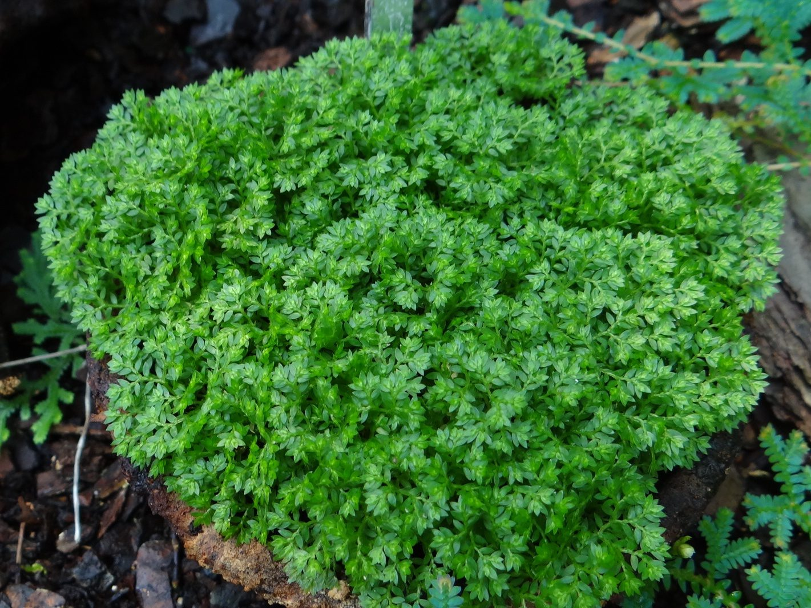Flores verdes:
Higuerillas
Flores verdes: Flores
verdes: 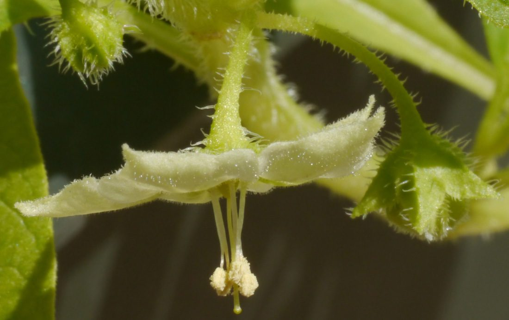Flores verdes:
Lagrimitas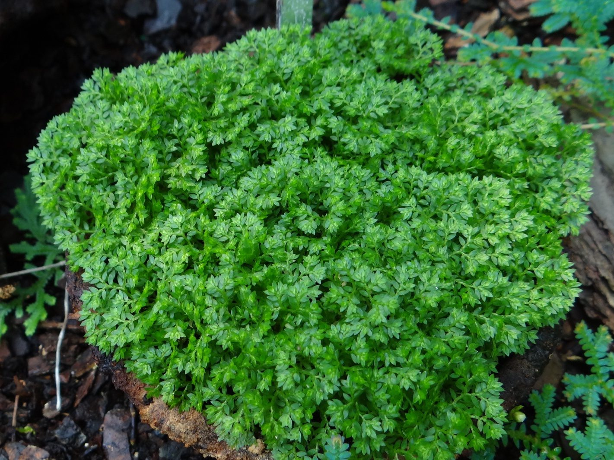Flores verdes:
Higuerillas Flores verdes: RomeritosFlores verdes:
EpazoteFlores verdes: Acelgas
Flores verdes: RomeritosFlores verdes:
EpazoteFlores verdes: Acelgas Flores verdes: Yerba del
sapoFlores verdesFlores naranjas:
Jazmines naranjas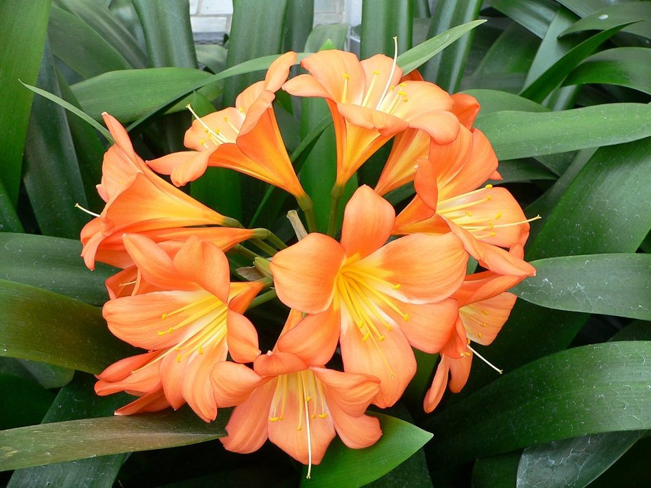
Flores verdes: Yerba del
sapoFlores verdesFlores naranjas:
Jazmines naranjas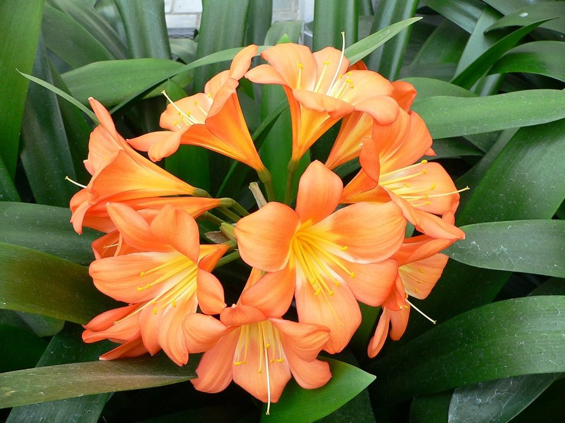
Lista de flores de lotoTipos de flores:
margaritasFlores bonitas:
orquídeas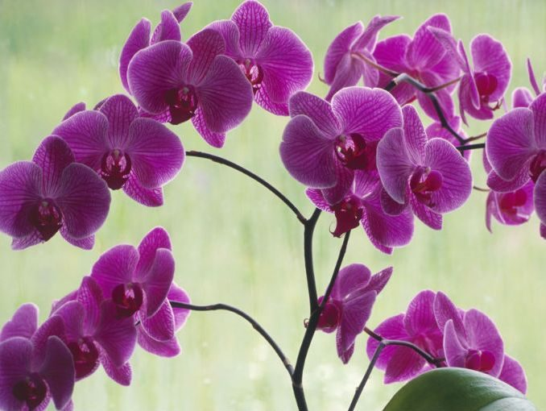Flores hermosas del
cerezoNombre de flores
bonitas: cannas índicasLista de flores bonitas:
claveles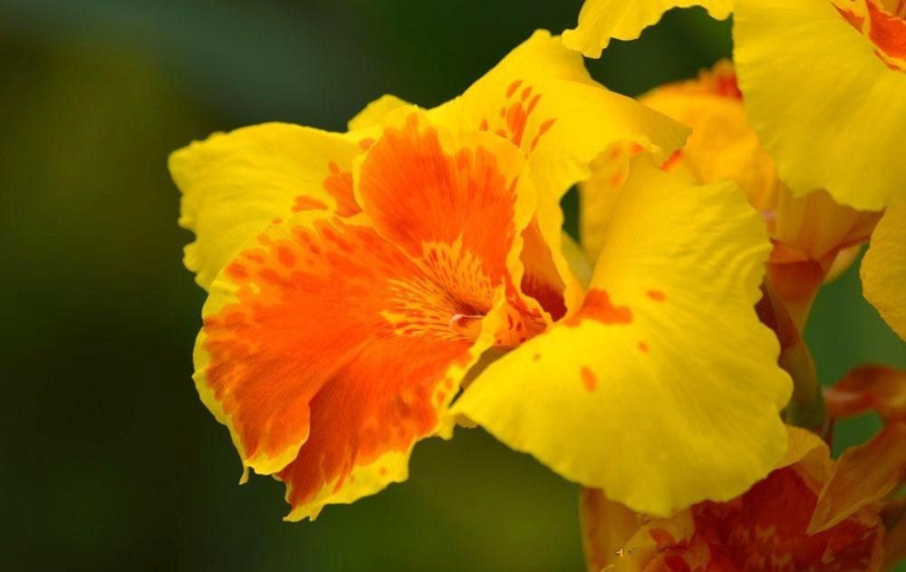Tipos de flores
bonitas:Flores bonitas: liriosFlores hermosas:
daliasNombre de flores
bonitas: tulipanesLista de flores bonitas:
hortensiasTipos de flores bonitas:
rosasFlores bonitas:
girasolesFlores
bonitasFlores verdes: Flores
verdes: 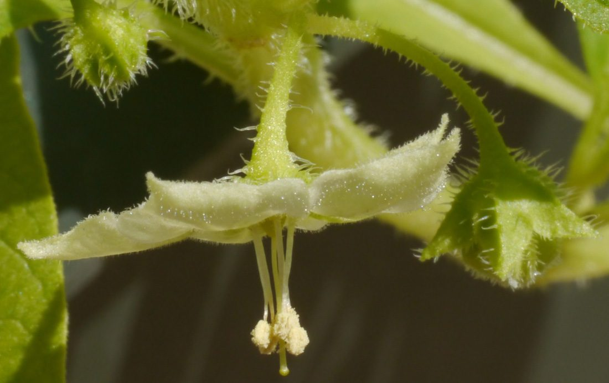Flores verdes:
Lagrimitas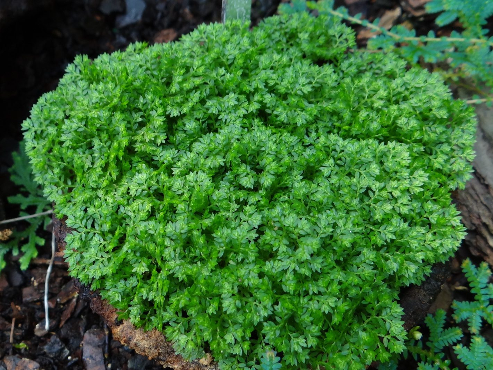Flores verdes:
HiguerillasFlores verdes: RomeritosFlores verdes:
EpazoteFlores verdes: AcelgasFlores verdes: Yerba del
sapoFlores verdesFlores naranjas:
Jazmines naranjas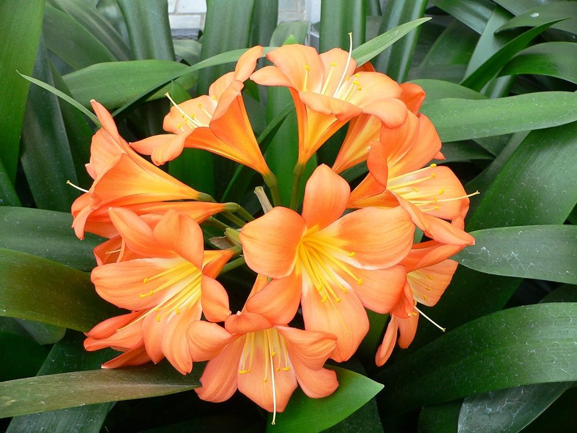
AcaciasAcianosAlhelísAmapolasAmarilisAzaleasAzucenasBegoniasBelladonasCameliasCampanillasClavelesClaveles chinosClematisCorazón de
MaríaCrisantemosDaliasFlor de
primaveraFlores para
adelgazarFlores para cocinarFlores para enamorarFrancesillasFresiasGeraniosGirasolesGladiolosHortensiasIrisJacintosJazmínLaurelesLavandasLilasLiriosLisMadreselvasMagnoliasMargaritasMimosasNarcisosNenúfaresNomeolvidesOrquídeasPensamientosPeoníasPetuniasPrímulasRosasTulipanesVioletas
CactusCactus más rarosCómo usar
fertilizantesConvertirse en
floristaFlores amarillasFlores azulesFlores blancasFlores de
bodaFlores moradasFlores naranjasFlores para
perfumeríaFlores rojasFlores verdesFlores y cosméticaFunerales y
condolenciasHerramientas para cuidarHuertos verticalesPlantas de marihuanaPlantas
resistentes al solProductos cosméticosRemedios
reafirmantes Respiración y fotosíntesisPlantas de salón